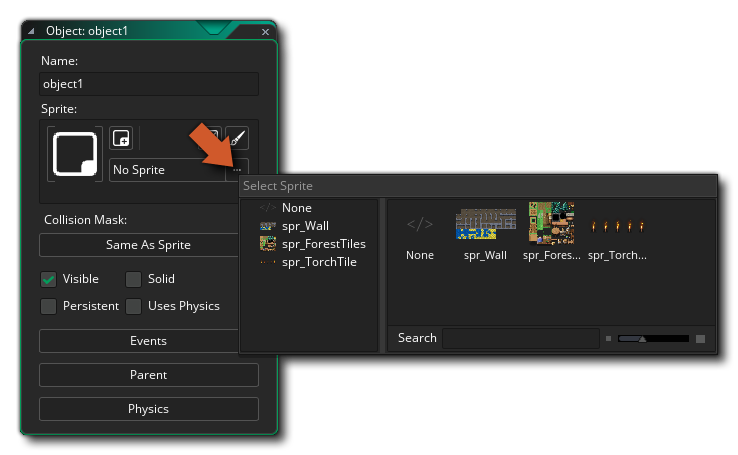
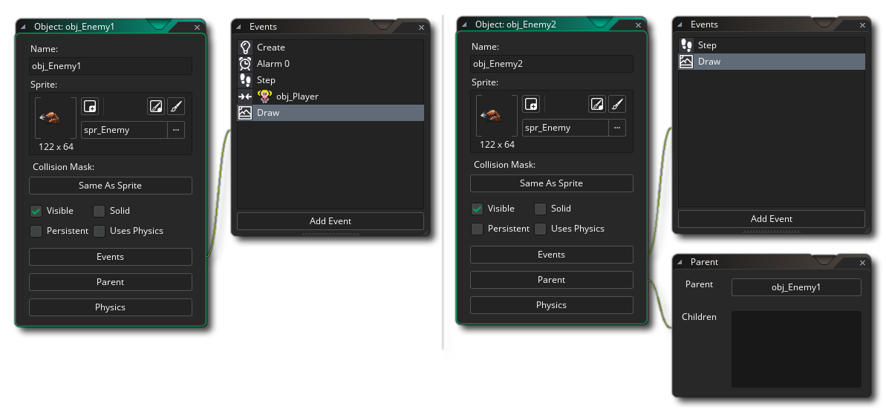

物体是用来控制游戏各方面的具体事件的特殊资源。大多数时候它们有一个与它们相关的精灵，以便你在游戏房间里看到他们，但有时候它们被用作“幕后”控制器来做与用户相关的事情或时间等... 它们可以被给予行为，并能对事件和它们自己做出反应。你在游戏看到的大多数事情都是基于物体和它们的相互作用。现在，我们说“基于”，因为你实际上并没有将物体直接放入游戏房间，而是放置这些物体的 实例，这些物体基本上是物体资源的副本（或者如果你愿意的话也可以称作克隆）。这很重要，因为这意味着物体和实例 不同，每一个实例均有自己的一套功能。
为了说明这一点，想想用 GameMaker Studio 2 制作的游戏。所有的角色，怪物，球，墙壁等都是你在资源树中创建的物体。然后，将物体拖动到 房间编辑器 中的房间，以创建从基本物体模板复制的 实例。然后可以在编辑器本身或通过代码更改房间中的实例，以便可以缩放或着色，或从“基础”物体修改其他详细信息。所以当我们谈论影响或改变一个实例的东西时，我们的意思是它会影响 一个房间中一个物体的特定副本。只有那一个单一的实例受到影响，而其余的都不受影响。但是，当我们谈论影响或改变 物体 时，我们意味着我们正在修改资源树中的物体，并且我们所做的任何事情也将反映在从该物体创建的所有实例中。所以，物体是实例的模板，实例是我们放置在房间中制作游戏的实例。
要在游戏中创建一个物体，你可以右键单击  物体资源文件夹，然后单击 创建 选项。这将打开此页面顶部的窗口，具有以下部分：
物体资源文件夹，然后单击 创建 选项。这将打开此页面顶部的窗口，具有以下部分：
在这里你可以给你的物体一个名字。该名称不应包含空格或未授权的字符（只允许使用字母数字字符和下划线 “_”），并且应该简短但难忘，以便稍后在可能有许多文件时可以轻松识别资源。例如，许多人使用前缀或后缀来识别资源之间的差异，如“obj_Ship”或“Ship_obj”。
接下来你可以选择你想要的物体的精灵。点击精灵框上的鼠标左键
，资源浏览器 将显示资源树中所有可用的精灵列表：
然后，你可以选择一个用于该物体。使用分配给物体的精灵，你可以单击编辑编辑精灵按钮
来更改精灵属性，或者该物体没有精灵，但你希望它拥有，那么你可以单击添加精灵按钮
将精灵分配给该物体。你还可以通过单击编辑图像按钮
来打开图像编辑器，来编辑已分配的精灵资源图像。
在精灵分配区域下方，你可以选择一个特定 碰撞遮罩 的按钮。默认情况下，一个物体将使用分配给它的精灵的碰撞属性，但是有时你可能希望碰撞有不同的遮罩形状。例如，在你的竖版游戏中，主要的精灵有一个矩形的碰撞遮罩，但是使碰撞更平滑的圆形遮罩可能会更好。在这些情况下，你可以单击“碰撞遮罩”按钮并选择另一个精灵资源，因此现在该对象的实例将使用指定的精灵 绘制 ，但碰撞基于 遮罩 精灵。
在这里，你将看到对象的以下选项：
可见 表示房间启动时此物体的实例是否可见。通常选择可见，但是有时不可见也是有用的 - 例如，可以使用点方式控制怪物移动，或者跟踪并进行一定的动作。不可见的物体仍然会对事件作出反应，如果它们有精灵或者遮罩也会发生碰撞事件，它们只不过是不可见并且不会执行 绘制 事件。该选项默认勾选。
当你将实例标记为固体时，你会告诉 GameMaker Studio 2 它应该在触发 碰撞事件 之前尝试解决任何碰撞。这是一个 非常 基本的功能，实际上它所做的只是将实例移回到检测到碰撞之前的那一刻，然后再执行事件本身中的任何代码或 DnD™，因此它的用处有限。
持久化 - 持久化物体是房间改变时不会消失的物体，而是“持续存在”并被转移到新房间中。只有当你手动地销毁它或者使用销毁动作或代码时，它才会消失。这意味着如果将永久物体放在一个房间中，它仍然可以在所有后续房间中使用，并将继续执行分配给其物体属性中的事件的任何操作，除了 创建事件，这只是在最初创建时才被触发一次，而不是当你更改为新房间时才被触发。
当你的主角从一个房间移动到另一个房间，并且你想保持某物体中的变量不变的时候，使用“持久化”很方便。但你应该非常小心地创建和销毁持久性物体，因为这很容易出错。
还要注意，持久化对象仍然会触发游戏开始、游戏结束、房间开始和房间结束事件，但是如果你重新启动游戏（例如，使用game_restart() 函数），所有持久对象都将被删除，并且只有在游戏再次创建时才存在。另请注意，如果你释放持久性对象，它将不会再从一个房间传递到另一个房间，除非在客户端事件触发之前重新启动。
当你勾选 使用物理 选项时，你告诉 GameMaker Studio 2 该物体应该是 物理世界 的一部分。检查此操作还将打开一个进一步链接的窗口，你可以在其中定义该对象的所有实例的物理属性。有关这方面的更多信息，请参见下一页的 物理学 部分。
选项
选项部分定义物体的不同属性选项，以及实例放置在房间中时的行为方式。在这里，你可以添加事件，即游戏代码的“构建块”，设置物体是否具有父物体，如果要启用物理功能，还可以设置物理属性。
那么，什么是事件？基本上，事件是在游戏循环中重要的时刻，根据你为它们编程的内容而发生事情。GameMaker Studio 2 适用于这些事件的循环 - 从房间开始到完成的那一刻，每一 步 （步是游戏时间的一个时刻，由房间速度设置决定）都有一个游戏循环运行或检查一系列事件，你可以选择在物体中放置响应这些事件的代码或 DnD 动作。
我们来看一个典型的物体设置，包括事件和代码：
正如你可以在我们的示例物体中看到的那样列出了许多应该响应的事件，但是最初当你创建一个物体时，这个列表是空的，你必须决定你需要哪些事件，那些物体应该做什么事件被触发。要将事件添加到物体中，请按事件列表底部的 添加事件 按钮，弹出以下窗口：
这是物体可以响应的所有基本事件的列表，尽管其中一些事件还具有 子事件 以进一步改进行为。例如，如果你添加一个按键
事件，你将会再次弹出一个子事件，让你选择该物体应该响应的键。选择你的事件后，代码窗口 将被链接到右侧并打开。你现在可以编辑代码，为你的物体提供特定的行为或对该事件的反应。
任何事件都可以单击鼠标右键
获取以下菜单选项：
这些选项是：
- 添加事件 - 从事件列表中添加新事件。
- 剪切/复制/粘贴事件 - 剪切，复制或粘贴所选事件。你也可以使用标准键盘快捷键：
/
+ X、
- 重复事件 - 复制所选事件。这将取代所选事件的内容，并在你指定的另一个事件中复制它们。
- 更改事件 - 更改事件。这将提示选择另一个事件类别，，一旦选中，当前事件的内容将更改为新事件（删除过程中的原始事件）。
- 转换为拖拽 / 代码 - 将使用你在创建项目时选择的方法（使用代码或使用拖拽动作）创建物体事件。使用此选项，无论项目类型如何，都可以将其从一个转换为另一个。
- 删除事件 - 删除事件（或多个事件）。
删除事件时，可以使用
+
你还应该注意，你可以 命名事件，或至少给它们一个简短的描述性文本，将在事件编辑器旁边显示。为此，只需将以下内容添加到事件代码编辑器的第一行：
/// @description 在这里输入你的文本
所以，你可能会有这样的东西 - 例如 - 一个计时器事件
/// @description 这是 AI 战斗计时器
现在在你的事件编辑器中，你将看到：


请注意，上面的事件部分简要概述了它们的工作原理，但是有关所有可用事件的详细信息，请参阅以下部分：
物体的其他选项是：
使用 GameMaker Studio 2 IDE 中的物体时，可以设置父/子层次结构。这可以通过单击物体编辑器中的 “父物体” 按钮，然后从资源树中选择另一个物体作为正在编辑的物体的“父”：
所以，游戏项目中的每个物体都可以有一个父物体，但这是什么意思？那么当一个物体分配了一个父物体时，它可以与该父物体共享代码，动作和事件。这种共享称为“继承”，具有父物体的物体称为“子”物体。子物体不仅可以与父物体共享代码，而且可以在父物体上执行检查和运行代码，并且还会自动包含子物体，从而节省了大量的时间和精力。
如果这听起来很复杂，那么另一种查看父物体的方法就是将物体“组合”在一起，同时保持共享，让它们分享某些东西，而不会失去自己独特的身份。也许这还没有说清楚事情，所以让我们举一些例子
假设你有一个“玩家”物体和四个不同的“敌人”物体。现在，如果他触摸到这四个物体中的任何一个，你想要玩家死亡，这通常会导致四个不同的碰撞事件与四个不同的动作或代码集合，一个对于每个敌人物体。但是，如果我们为所有敌人设置一个 父 物体，那么我们可以仅使用父物体创建一个碰撞事件。这样，无论是哪个“子”敌人碰到了主角，都将触发碰撞事件。贼方便！在实际的 GameMaker Studio 2 物体中，你会看到如下所示的内容：
在左边，我们有四个单独的碰撞事件，右边我们有一个碰撞事件，因为我们创建了一个“父”物体，并分配了所有的敌方物体。请注意，父物体不必在其中包含任何事件或代码...
父物体的另一个例子是：在你的游戏中，如果你想要创建 10 个不同的外观物体，但你要它们它们都以相同的方式运行。为此，你将创建一个父物体，并在其中包含所有行为操作或所需事件中的代码，然后你将创建 没有 动作或代码但具有不同精灵的十个物体，并将它们分配给你的父物体。现在，当你把这些实例放在一个房间里时，它们都会表现得相同（它们的父物体相同），但是看起来是不同的（它们的精灵不同），因为它们会“继承”父物体的事件。
最后，你可以使用父物体处理来“混合搭配”事件和行为。我们将用一个最后的例子说明这一点... 假设你想要两个怪物：一个上下移动，另一个是左右移动，但是你也希望它们中的两个人具有相同的生命值、射击玩家动作，并且如果与它们碰撞，会伤害到玩家。在这种情况下，你可以看到几乎所有事件应该具有相同的操作，除了那几个移动的控制。因此，我们可以使一个物体成为另一个物体的父物体，但在这种情况下，我们也定义子物体的某些事件。这些事件“覆盖”父事件，这意味着每当一个子物体的事件包含操作时，这些事件将被执行，而不是父事件中包含的操作。如果你还想执行父事件，则可以使用函数 event_inherited() 或 DnD™ 动作调用父事件来调用 所谓的“继承”事件。 
在左上方是其中有 5 个事件的父物体，右边可以看到“子”物体。这个孩子只定义了2个事件，但它会继承父进程的事件，所以有5个完全一样。现在的区别是，孩子添加的事件（步骤和绘制）将覆盖父事件中的事件。
如所示，无论何处使用父对象，这也适用于后代（或“子”）。当在一个动作中，你指出该操作必须应用于某个对象的实例时，会发生这种情况。当你在代码中使用 with（）语句时也会发生这种情况（有关更多详细信息，请参阅手册），当你调用代码函数（如<a1> instance_position ， instance_number ，etc ...如果你提供一个父对象，那么它将会被包含在检查中。最后，如果将敌人 1 的速度设置为 10，敌人 2 的速度也将变为 10，因为它是敌人 1 的子物体，所以在你参考其他物体中的变量时，父物体也可以工作。
在大多数情况下，通常认为创建一个基本父物体是良好做法，并且该基础物体包含所有默认行为，但不要在游戏中使用它的一个实例。相反使用所有的孩子对象，只能在上面列出的情况下使用父类，用于碰撞，引用变量等。你也应该意识到，父物体也可以有父物体！显然，你不能创建一个循环“父1是父2的孩子是父1的子”，但是你可以创建一个所谓的“对象层次结构”，其中“parent1是parent2的子代是parent3的子代”。这对于保持游戏结构非常有用，并且强烈建议你学习使用此机制。
当你首次创建新物体资源时，会有一个名为为 使用物理 的复选框，默认情况下不会勾选。选择此选项将会将物体的实例放置在房间中时彻底改变物体的行为，因为它会切换物体的物理属性，并意味着其“传统”运动和碰撞功能不再有效（但只有当被放置的房间也被标记为物理时）。请参阅 - 房间编辑器）。检查时，物体资源窗口将打开物理编辑器的新链接窗口：
在开始编辑物理行为的值之前，首先设置 碰撞形状 是个好主意。使用“正常”碰撞系统，你的碰撞是基于分配给物体的精灵，但是当物理启用时不再是这样。我们需要自己为物体分配一个 碰撞形状（这被称为固定装置，有关更多信息，请参阅 物理函数），它可以是你自己定义的圆形、矩形或多边形。单击 修改碰撞形状 按钮将打开以下链接窗口以编辑形状：
这看起来与 路径编辑器 类似，并且功能大致相同。然而，根据你选择的遮罩，它可能会更具限制性：
- 如果你选择 圆形 遮罩，则只能拉任何路径点，使圆直径更大或更小
- 如果你选择 矩形 遮罩，则可以移动四个角中的任何一个，但相应的角将自动调整位置，以始终保持矩形
- 如果你选择 自定义（多边形）遮罩，它必须至少有 3 个点，最多有 8 个点，并且必须为凸面（请参见下图）。

一旦你设置了你的形状，你需要定义你的物体的基本物理属性。这些通过更改以下参数进行配置：
某物的密度定义为其 每单位体积的质量，也就是说它在游戏世界中占据的空间应该有多少质量。所以气球的密度很小，因为它的质量很小，占据很大的空间，而铅棒的密度很高，因为它的质量很大，而且空间很小。在 GameMaker Studio 2 2D 物理世界中，质量是根据你为密度输入的值和你为固定装置定义的形状的表面积自动计算的。这将直接影响固定装置具有多少惯性以及如何对碰撞和力产生反应，因此，如果你制造出高密度的小形状，则会产生非常大的质量效应（如铅棒）但是如果你定义了一个较小密度的大形状，那么它的质量效应会更小（像一个气球）。
在物理学中，恢复原则被定义为 “弹性变形后物体或系统返回到原始状态”，但是由于 GameMaker Studio 2 中的固定装置实际上是 刚体，不能形变，所以恢复实际上是一种表示固定装置有多大“弹性”的方式。此设置将影响物体在与其他物体碰撞时 “弹跳” 多少，并且与重力和摩擦力作用于实例上的其他力相配合。
默认情况下，所有物理物体的碰撞组是 0，这意味着它们将正常相互作用，这又意味着它们 必须有一个碰撞事件进行交互 （一个简单的解释是将会触发碰撞），否则不会发生碰撞。但是，你也可以指定物体应属于特定的 碰撞组。通过将物体分配给一个正面的碰撞组（例如：三个物体全部在组 “2” 中），则你是在告诉 GameMaker Studio 2 这些物体的实例即使在碰撞事件中没有任何东西也应该 总是碰撞 的，服从你分配的物理属性和他们所在的空间。相反，如果你有具有负碰撞组的物体（例如：四个物体分配为 “-1”），则你是在告诉 GameMaker Studio 2 这物体象 永远不会发生碰撞，并且它们之间的任何碰撞事件都将被忽略。
注意： 使用碰撞组会大大增加物理系统所需的处理能力，并且只有在绝对必要时才能使用，并且你应该尽可能少地使用组。
阻尼用于降低实例的物理世界速度，并且与摩擦不同，因为摩擦力仅在碰撞形状（弹性）的两个实例接触时才发生。模拟阻尼比摩擦要容易得多，但请注意，阻尼不是摩擦的替代品；这两个效果可以而且应该一起使用。
如果你考虑“现实世界”中的任何旋转物体，除非有电机或空间，否则由于外力（如与其周围的空气的摩擦）的影响，它会随着时间的推移而减慢。我们可以设置这个选项来模拟这个效果，减少物理世界中的实例的旋转速度，因为没有它，任何旋转的实例将继续无限旋转。
摩擦力是抵抗物质元素彼此滑动的相对运动的力量，在 GameMaker Studio 2 物理世界中，由于两个实例与固定装置之间的撞击而造成的动量损失，这种力量将会转化为物理因素。所以当两个实例碰撞时，它们的运动受到这个值的影响，高摩擦力将导致更大的动量损失。
最后，固定装置有三个额外的选项可以标记为打开或关闭，即：感应器、初始唤醒和运动这些选项中的每一个将通过以下方式改变你的固定装置的行为：
选中此框，你就告诉了 GameMaker Studio 2 基本上 “忽略” 物体的物理属性，但仍会返回与其周围的物体的碰撞事件。以这种方式，你可以拥有一个在房间中没有物理存在的实例，但是可以对另一个实例（如玩家）的碰撞做出反应，并依次执行某些操作，例如打开门，或与放在房间中的另一个实例触发某种动作。
注意： 当碰撞 首次发生时，感应器固定装置将触发碰撞事件，这意味着当两个物体继续重叠时，你不会得到碰撞事件流。（一般来说是这样）。如果它们停止重叠并且随后再次重叠，则会触发另一个碰撞事件。
默认情况下是勾选的，它表示在其放置的房间开始处的固定装置的初始“状态”。通常你希望它从一开始处于激活状态（即：参与物理世界），但是由于物理模拟的突然启动，有时这可能会导致某些不稳定和不必要的影响。为了避免这些影响，你可以取消选中此标志，并使用固定装置创建实例让实例暂时睡眠（即不激活）。除非有事情和该实例有关联，否则它不会参与物理模拟。
基于物理的游戏将会有一些你想要移动的实例，但不希望被诸如重力等力和与动态物体碰撞所产生的力量所影响（例如，在平台游戏中考虑移动平台）。对于这样的物体，简单地将固定装置的密度设置为 0 将意味着，在物理学上将假定该物体不会对任何事情产生反应。但是，勾选此框将使静态物体能够运动，这样你可以可以使用适当的变量去移动或旋转它，尽管它不会受到重力和碰撞的影响。